Материалы
Реставрация лака
Мастерская реставрации старинной, антикварной и ретро мебели предлагает восстановить лаковое покрытие мебели из дерева.

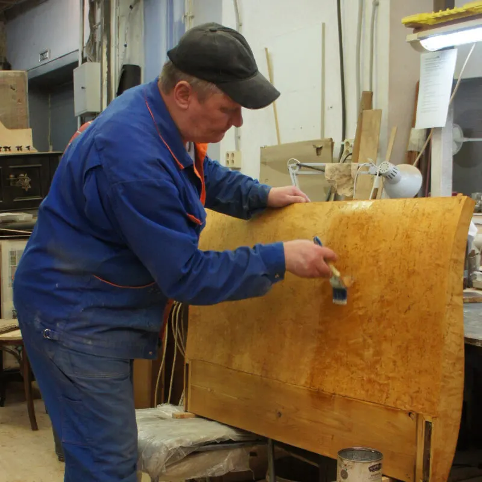
О чём рассказывает мастерская
- Обновить лак
- Ремонт лака
- Как и чем освежить мебель
- Опыт - основа успеха
- Лак для старой мебели
- Лак глянцевый и матовый
- Мебельный лак
- Реставрационный лак
- Как покрыть мебель лаком
- Наиболее пригодные для использования в домашних условиях лаки
В материале мастерской
Фотографии и детали


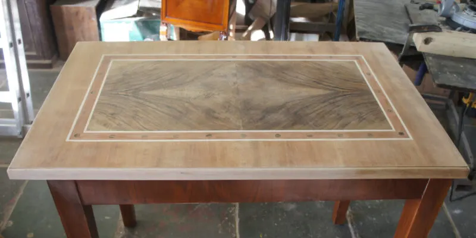
Открыть снимок у мастерской

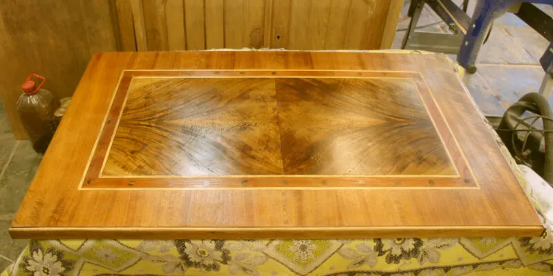
Открыть снимок у мастерской

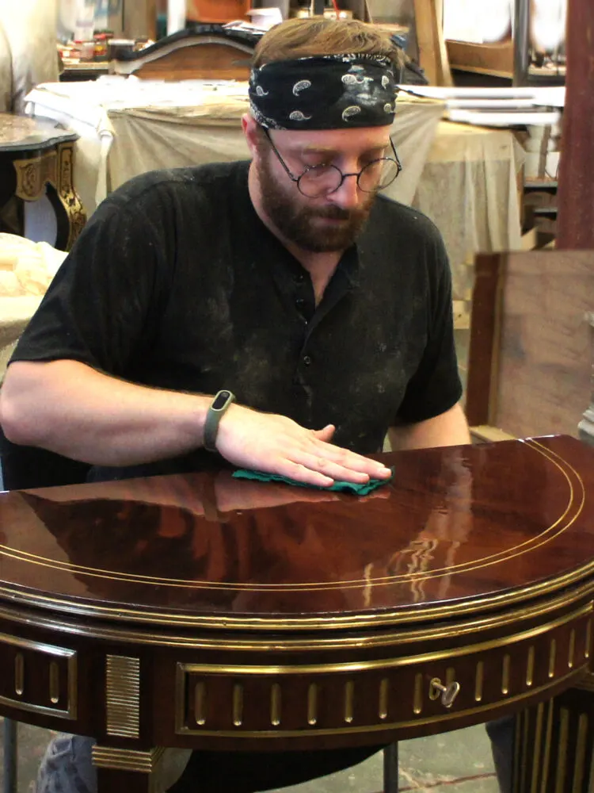
Открыть снимок у мастерской

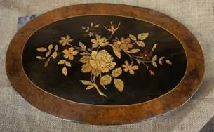
Открыть снимок у мастерской

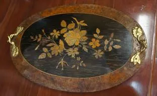
Открыть снимок у мастерской

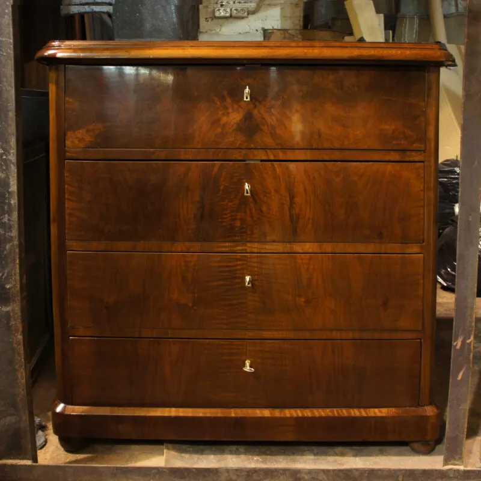
Открыть снимок у мастерской

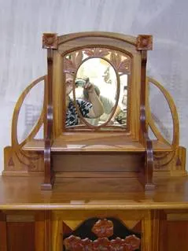
Открыть снимок у мастерской

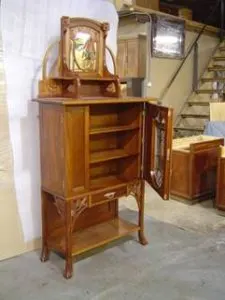
Открыть снимок у мастерской

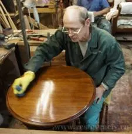
Открыть снимок у мастерской

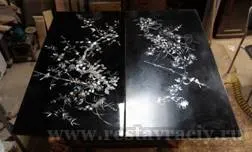
Открыть снимок у мастерской

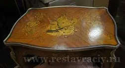
Открыть снимок у мастерской

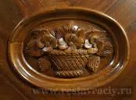
Открыть снимок у мастерской
Есть похожая вещь?
Подберите ракурсы для предварительной оценки.